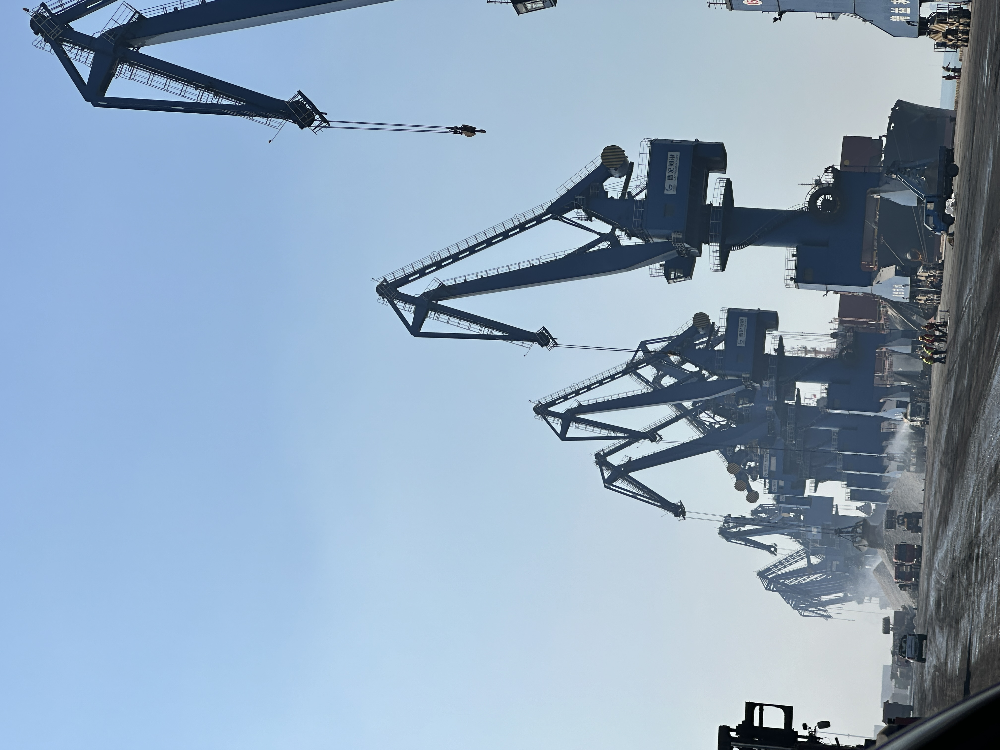

Global Clinker Trade Is Recovering, but Buyers Are Becoming More Selective
Recent trade signals point to a rebound in global clinker flows after a softer period. But the real shift is not just more tonnes moving. Buyers are becoming more selective about destination fit, freight discipline and compliance readiness before they commit.
全球熟料贸易在回暖，但买方正在变得更挑剔
近期市场信号显示，全球熟料贸易在经历一段偏弱周期后，正在回暖。但更关键的变化并不只是“吨位回来了”，而是买方在成交前，对目的地匹配、运费执行和合规准备变得更加挑剔。

The starting point is straightforward. Search results tied to recent trade reporting indicate that global cement clinker exports in 2024 rose by about 5.9% to roughly 86Mt, ending a two-year decline. Other 2025 and early 2026 market signals continued to show active destination demand, including strong Turkish export flows into Romania and other nearby markets. In plain terms, the market is not frozen. Cargo is moving again. But it is moving into a more selective and more conditional trading environment.

1. Recovery is real, but not evenly distributed
A rebound in global clinker trade does not mean every route is equally attractive. Some destinations still need imported upstream material because domestic grinding economics, plant utilization or regional supply balance remain tight. Others may appear open on paper but become harder in practice once freight risk, unloading constraints or policy friction are added. That is why selective demand can coexist with improving headline export data.
For traders and suppliers, the implication is simple: volume recovery should not be read as a green light for undisciplined selling. The stronger opportunities are likely to stay concentrated in lanes where delivered cost, discharge practicality and buyer replenishment logic still align. In other words, the market may be broader than it was last year, but it is not loose enough to reward every offer.
2. Buyer selectivity is rising around compliance and execution
Recent Europe-related coverage also shows why buyer behavior is changing. Import decisions are increasingly shaped by carbon compliance, documentation quality and confidence in shipment execution, not just by FOB price. That matters for clinker first, but the same logic extends to slag, GBFS and GGBFS whenever customers are trying to balance cost, supply security and lower-carbon positioning at the same time.
A supplier may still have competitive tonnage, but if the destination case is weak, if laycan discipline is inconsistent, or if supporting documentation feels incomplete, buyers now have more reason to hesitate. In a recovering market, hesitation becomes a filter. It separates cargo that is merely available from cargo that is genuinely bankable and workable.

3. Why this matters for SENLAN-relevant materials too
This market shift is relevant beyond clinker alone. For GBFS, GGBFS and other supplementary cementitious materials, the same pattern is becoming visible: customers care about the full delivered equation. That means stable loading windows, workable shipment formats, realistic freight planning and reliable technical positioning. As buyers become more selective, disciplined suppliers gain room to stand out even in competitive markets.
Takeaway: the clinker rebound is encouraging, but it is not a return to easy volume-driven trade. The better reading is that global activity is recovering while the standard for acceptable cargo is rising. The winners are likely to be suppliers that combine tonnage with destination logic, execution clarity and commercial discipline.
先看最直接的信号。近期搜索结果对应的贸易报道显示，全球水泥熟料出口在 2024 年同比回升约 5.9%，达到大约 8600 万吨，结束了此前连续两年的下滑。进入 2025 年和 2026 年初后，市场信号仍然显示部分目的地需求保持活跃，例如土耳其向罗马尼亚及周边市场的熟料出口仍然偏强。换句话说，市场并没有冻结，货确实又在流动起来；但它进入的是一个更挑目的地、更挑执行质量、也更有条件约束的交易环境。
1. 回暖是真的，但并不是均匀回暖
全球熟料贸易回升，并不意味着每条航线都同样有吸引力。有些目的地仍然需要进口上游材料，因为本地粉磨经济性、工厂利用率或区域供需平衡依然偏紧；另一些市场看起来“理论上有空间”，但一旦把运费风险、卸货条件或政策摩擦算进去，实操难度就明显上升。这也是为什么头部出口数据改善的同时，买方需求仍然会呈现选择性。
对贸易商和供应方来说，启示很直接：不能把贸易量回升误读成“随便卖都能成交”。真正更强的机会，往往还是集中在那些到岸成本、卸港可操作性和买方补库逻辑仍然对得上的线路上。也就是说，市场可能比去年更活，但还远没宽松到能奖励每一份报价。
2. 买方的挑剔，正更多体现在合规与执行上
近期与欧洲相关的公开信息也解释了，为什么买方会越来越谨慎。进口决策越来越受到碳合规、单证质量和装运执行可信度影响，而不只是 FOB 数字高低。这首先体现在熟料上，但同样的逻辑也在延伸到矿渣、GBFS、GGBFS 等材料，尤其当客户同时希望兼顾成本、供货安全和更低碳定位时，这种变化会更明显。
今天，一个供应方即便手里有竞争性吨位，如果目的港逻辑不够强、laycan 执行不够稳、配套资料看起来不够完整，买方就更有理由犹豫。而在一个回暖中的市场里，这种犹豫本身就成了筛选器。它把“有货”与“这票货真的可做、可签、可落地”区分开来。
3. 这为什么也适用于 SENLAN 相关材料
这类市场变化，不只和熟料有关。对 GBFS、GGBFS 以及其他补充胶凝材料而言，同样的趋势也越来越明显：客户看重的是完整的交付方程式。这意味着装期是否稳定、发运形式是否可操作、运费规划是否现实、技术定位是否可靠。随着买方变得更挑剔，执行纪律更强的供应方，反而更有机会在竞争激烈的市场里被看见。
结论：熟料贸易回暖当然是积极信号，但它并不是回到“只靠吨位推动成交”的旧节奏。更准确的理解是，全球活跃度在恢复，同时市场对“什么样的货才算合格可成交”的标准也在上升。未来更有优势的供应方，往往会是那些既有吨位，又有目的港逻辑、执行清晰度和商业纪律的一批。
Explore products or discuss your inquiry.
If this market signal is relevant to your sourcing plan, you can review our core product pages or contact us with laycan, quantity, target specification and loading method.
Request a quote